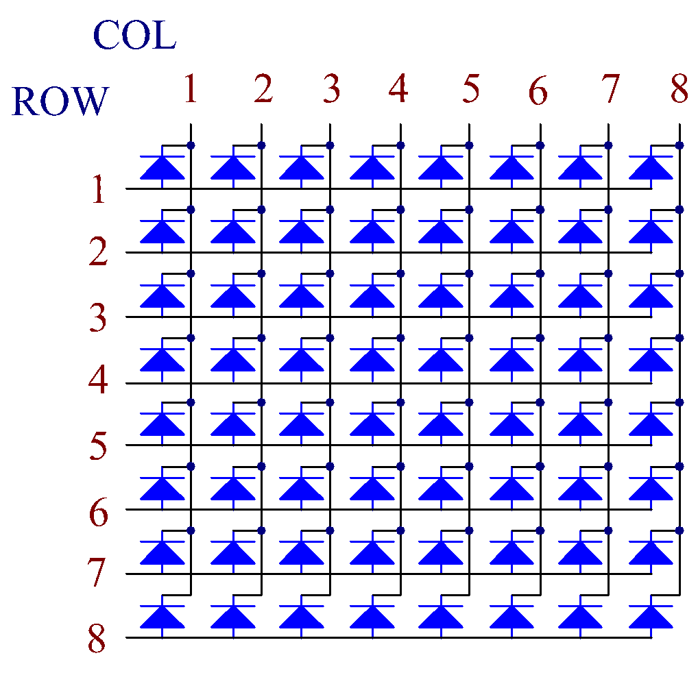

Nota
Ciao e benvenuto nella SunFounder Raspberry Pi & Arduino & ESP32 Enthusiasts Community su Facebook! Approfondisci il mondo di Raspberry Pi, Arduino ed ESP32 con altri appassionati.
Perché unirsi?
Supporto Esperto: Risolvi i problemi post-vendita e le sfide tecniche con l’aiuto della nostra comunità e del nostro team.
Apprendi e Condividi: Scambia consigli e tutorial per migliorare le tue competenze.
Anteprime Esclusive: Accedi in anteprima agli annunci di nuovi prodotti.
Sconti Speciali: Approfitta di sconti esclusivi sui nostri prodotti più recenti.
Promozioni Festive e Giveaway: Partecipa a giveaway e promozioni festive.
👉 Sei pronto a esplorare e creare con noi? Clicca [Qui] e unisciti oggi stesso!
1.1.6 Matrice LED a Punti
Introduzione
Come suggerisce il nome, una matrice LED a punti è una matrice composta da LED. L’accensione e lo spegnimento dei LED consentono di visualizzare diversi caratteri e modelli.
Componenti

Principio di Funzionamento
Matrice LED a Punti
In generale, le matrici LED a punti si suddividono in due tipi: catodo comune (CC) e anodo comune (CA). Anche se sembrano simili, differiscono internamente. In questo kit utilizziamo una matrice CA (con anodo comune), riconoscibile dalla scritta 788BS sul lato.
Nella figura qui sotto, i pin sono disposti su entrambi i lati della parte posteriore. Prendendo come riferimento il lato con l’etichetta, i pin su questo lato vanno da 1 a 8, mentre sull’altro lato da 9 a 16.
Vista esterna:

Nelle figure seguenti è mostrata la struttura interna. Nella matrice LED CA, ROW rappresenta l’anodo del LED e COL il catodo; è il contrario per una matrice CC. In entrambi i tipi, i pin 13, 3, 4, 10, 6, 11, 15 e 16 corrispondono a COL, mentre i pin 9, 14, 8, 12, 1, 7, 2 e 5 a ROW. Se si desidera accendere il primo LED in alto a sinistra, per una matrice LED CA si imposta il pin 9 su Alto e il pin 13 su Basso; per una matrice CC, il pin 13 su Alto e il pin 9 su Basso.
Vista interna:
{kind=link}
Numerazione dei pin corrispondenti a righe e colonne:
COL |
1 |
2 |
3 |
4 |
5 |
6 |
7 |
8 |
Pin No. |
13 |
3 |
4 |
10 |
6 |
11 |
15 |
16 |
ROW |
1 |
2 |
3 |
4 |
5 |
6 |
7 |
8 |
Pin No. |
9 |
14 |
8 |
12 |
1 |
7 |
2 |
5 |
Qui vengono utilizzati due chip 74HC595: uno controlla le righe e l’altro le colonne della matrice LED a punti.
Schema di Collegamento
T-Board Name |
physical |
wiringPi |
BCM |
GPIO17 |
Pin 11 |
0 |
17 |
GPIO18 |
Pin 12 |
1 |
18 |
GPIO27 |
Pin 13 |
2 |
27 |
{kind=link}
Procedure Sperimentali
Passo 1: Costruisci il circuito. Poiché il cablaggio è complesso, procediamo per gradi. Innanzitutto, inserisci il T-Cobbler, la matrice LED a punti e i due chip 74HC595 nella breadboard. Collega il 3.3V e il GND del T-Cobbler ai fori sui due lati della breadboard, quindi collega il pin 16 e 10 dei due chip 74HC595 a VCC, i pin 13 e 8 a GND.
Nota
Nell’immagine Fritzing sopra, il lato con l’etichetta si trova in basso.

Passo 2: Collega il pin 11 dei due 74HC595 tra loro e poi a GPIO27; successivamente il pin 12 di entrambi i chip a GPIO18; infine, collega il pin 14 del 74HC595 sul lato sinistro a GPIO17 e il pin 9 al pin 14 del secondo 74HC595.

Passo 3: Il 74HC595 sul lato destro controlla le colonne della matrice LED. Consulta la tabella qui sotto per il mapping. Di conseguenza, i pin Q0-Q7 del 74HC595 corrispondono rispettivamente ai pin 13, 3, 4, 10, 6, 11, 15 e 16.
74HC595 |
Q0 |
Q1 |
Q2 |
Q3 |
Q4 |
Q5 |
Q6 |
Q7 |
LED Dot Matrix |
13 |
3 |
4 |
10 |
6 |
11 |
15 |
16 |

Passo 4: Ora collega le RIGHE della matrice LED. Il 74HC595 sul lato sinistro controlla le RIGHE. Consulta la tabella qui sotto per il mapping. I pin Q0-Q7 del 74HC595 sul lato sinistro sono quindi mappati ai pin 9, 14, 8, 12, 1, 7, 2 e 5 rispettivamente.
74HC595 |
Q0 |
Q1 |
Q2 |
Q3 |
Q4 |
Q5 |
Q6 |
Q7 |
LED Dot Matrix |
9 |
14 |
8 |
12 |
1 |
7 |
2 |
5 |

Passo 5: Vai nella cartella del codice.
cd ~/davinci-kit-for-raspberry-pi/c/1.1.6/
Passo 6: Compila.
gcc 1.1.6_LedMatrix.c -lwiringPi
Passo 7: Esegui.
sudo ./a.out
Dopo l’esecuzione del codice, la matrice LED si accende e si spegne riga per riga e colonna per colonna.
Nota
Se non funziona dopo l’esecuzione, o appare un messaggio di errore: "wiringPi.h: No such file or directory», fare riferimento a Il codice C non funziona?.
Codice
#include <wiringPi.h>
#include <stdio.h>
#define SDI 0 // ingresso dati seriali
#define RCLK 1 // ingresso clock della memoria (STCP)
#define SRCLK 2 // ingresso clock del registro a scorrimento (SHCP)
unsigned char code_H[20] = {0x01,0xff,0x80,0xff,0x01,0x02,0x04,0x08,0x10,0x20,0x40,0x80,0xff,0xff,0xff,0xff,0xff,0xff,0xff,0xff};
unsigned char code_L[20] = {0x00,0x7f,0x00,0xfe,0x00,0x00,0x00,0x00,0x00,0x00,0x00,0x00,0xfe,0xfd,0xfb,0xf7,0xef,0xdf,0xbf,0x7f};
void init(void){
pinMode(SDI, OUTPUT);
pinMode(RCLK, OUTPUT);
pinMode(SRCLK, OUTPUT);
digitalWrite(SDI, 0);
digitalWrite(RCLK, 0);
digitalWrite(SRCLK, 0);
}
void hc595_in(unsigned char dat){
int i;
for(i=0;i<8;i++){
digitalWrite(SDI, 0x80 & (dat << i));
digitalWrite(SRCLK, 1);
delay(1);
digitalWrite(SRCLK, 0);
}
}
void hc595_out(){
digitalWrite(RCLK, 1);
delay(1);
digitalWrite(RCLK, 0);
}
int main(void){
int i;
if(wiringPiSetup() == -1){ //se l'inizializzazione di wiring fallisce, stampa il messaggio
printf("setup wiringPi failed !");
return 1;
}
init();
while(1){
for(i=0;i<sizeof(code_H);i++){
hc595_in(code_L[i]);
hc595_in(code_H[i]);
hc595_out();
delay(100);
}
for(i=sizeof(code_H);i>=0;i--){
hc595_in(code_L[i]);
hc595_in(code_H[i]);
hc595_out();
delay(100);
}
}
return 0;
}
Spiegazione del Codice
unsigned char code_H[20] = {0x01,0xff,0x80,0xff,0x01,0x02,0x04,0x08,0x10,0x20,0x40,0x80,0xff,0xff,0xff,0xff,0xff,0xff,0xff,0xff};
unsigned char code_L[20] = {0x00,0x7f,0x00,0xfe,0x00,0x00,0x00,0x00,0x00,0x00,0x00,0x00,0xfe,0xfd,0xfb,0xf7,0xef,0xdf,0xbf,0x7f};
L’array code_H rappresenta gli elementi della riga della matrice LED, mentre l’array code_L rappresenta quelli della colonna. Quando vengono visualizzati i caratteri, un elemento della riga e uno della colonna vengono presi e assegnati ai due chip HC595, mostrando così un pattern sulla matrice LED. Prendiamo come esempio il primo numero di code_H, 0x01, e il primo di code_L, 0x00.
0x01 convertito in binario diventa 00000001; 0x00 in binario diventa 0000 0000.
In questo kit viene utilizzata una matrice LED ad anodo comune, quindi solo gli otto LED dell’ottava riga si illuminano. Quando code_H è 0xff e code_L è 0x7f, si accendono i LED nella prima colonna.

void hc595_in(unsigned char dat){
int i;
for(i=0;i<8;i++){
digitalWrite(SDI, 0x80 & (dat << i));
digitalWrite(SRCLK, 1);
delay(1);
digitalWrite(SRCLK, 0);
Scrive il valore di dat al pin SDI dell’HC595 bit per bit. Il valore iniziale di SRCLK è impostato su 0, qui viene impostato su 1 per generare un impulso di salita, quindi si sposta il dato da pinSDI (DS) al registro a scorrimento.
void hc595_out(){
digitalWrite(RCLK, 1);
delay(1);
digitalWrite(RCLK, 0);
Il valore iniziale di RCLK è impostato su 0, e viene impostato su 1 per generare un impulso di salita, trasferendo i dati dal registro a scorrimento al registro di memoria.
while(1){
for(i=0;i<sizeof(code_H);i++){
hc595_in(code_L[i]);
hc595_in(code_H[i]);
hc595_out();
delay(100);
}
}
In questo ciclo, i 20 elementi nei due array, code_L e code_H, vengono caricati uno ad uno sui due chip 74HC595. Poi viene chiamata la funzione hc595_out() per trasferire i dati dal registro a scorrimento al registro di memoria.